|
Introduction
Comics
Information
Allies
Villains
Movies
Action Figures
Photo Gallery
As A Whole
|
Movies of


|
|
Cast:
Alex Hyde White: Reed Richards /
Mr. Fantastic
Rebecca Stab: Sue Storm / Invisible Woman
Jay Underwood: Johnny Storm / Human Torch
Michael Bailey Smith: Ben Grimm
Carl Ciarfalio: The Thing
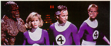 |
This movie was
never released and was shelved in 1993. The movie starred Alex Hyde
White as Mr. Fantastic, Rebecca Stab as the invisible girl, Jay
Underwood as the Human Torch and Michael Bailey Smith as the Thing.
The villain was Dr Doom and a last minute change from the Moleman had
a villain named the Jeweller. |
|
The story takes
place some ten years in the past where Reed Richards and Benjamin
Grimm are college students and best friends. Reed is embarking on a
joint life-long experiment with Victor von Doom to harness the power
of Colossus. |
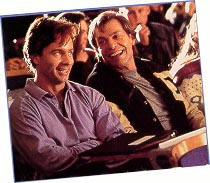 |
|
|
Colossus is a
mysterious energy field which comes close to the Earth every once in a
while. Doom's calculations worry Reed but nevertheless, they agree to
perform the experiment that night. |
|
Reed and Ben live
in a boarding house which is owned by a certain Mrs. Storm who has two
children named Susan and Johnny. Susan, naturally, has a crush on Reed
Richards and all four are good friends. |
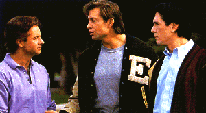 |
|
 |
That evening,
Reed and Doom prepare their machine to harness the power of Collosus
having created a machine in a top floor attic. |
|
Reed queries
Doom's calculations again but it is too late. Collosus is here! Reed
raises the antenna which begins to absorb Collossus but they find that
their machine can't handle that amount of energy is on the verge of
overload. Sensing the danger, Reed leaps to safety, crying out to Doom
to do the same. Doom refuses and frantically tries to control the
overload. |
 |
|
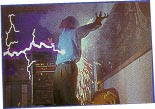 |
Meanwhile,
outside, Ben Grimm and a whole host of other students watch the
phenomenon that is Collosus up in the night sky. Ben sees flames over
where Reed's experiment is taking place in the top floor of the house.
Worried, Ben races to aid Reed. Back at the experiment, the machine
explodes, sending out waves of powerful energy which electrocute and
burn Doom. Ben arrives and manages to push Doom out of harm's way but
it seems that is too late. Doom is horrifically disfigured. Ben and Reed
rush Doom to the hospital but later find that it was too late. Doom
dies... or so it would seem. Two men, recognizing the potential of
Doom's intelligence, kidnap the nearly dead man's body and promise to
help him. |
|
We are taken to present day
where Reed is now a successful scientist working at the Baxter
building. He and Ben have remained good friends and it is here that
they both meet Alicia Masters. Ben is taken aback by her beauty and
the feeling is more than mutual. A mysterious being known only as the
Jeweller also spies the beauty.
Reed is at the point where he
is ready to once again attempt to harness the power of Colossus with
the use of a giant diamond. |
 |
|
 |
This time, Reed
decides to travel into space with Ben as his pilot but they are two
short of a crew. Ben, against Reed's wishes, enlists the help of Susan
and Johnny Storm to complete the crew. Doom finds out about the
experiment and sends two of his agents out to sabotage it but the
Jeweller beats them to it by stealing the giant diamond and replacing
it with a fake. |
|
During the
mission, Reed attempts to harness the power of Collossus and
everything seems to be fine until the 'diamond' explodes and he
realizes it was a fake. With nothing to protect them with, all four of
them are bathed in the power of Collossus. The spaceship overloads and
crashes back down to Earth. |
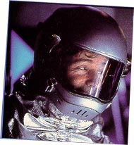 |
|
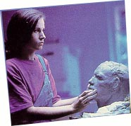 |
Thinking that
they have died, the authorities arrange for a memorial to be erected
and for the face sculptures, the task is given to Alicia Masters.
Realizing that it is Ben Grimm who has seemingly been killed, she
becomes distraught, right at the instant that the Jeweller's men
kidnap her. |
|
In a remote area,
Ben Grimm wonders among the wreckage of the downed spacecraft when he
hears shouts for help in the distance. He races over to find Reed
trapped beneath some debris and frees him. Like Ben, Reed is unscathed.
Suddenly, Johnny comes running towards them and seeing that he is also
fine, he begins to query how they are all unhurt while the ship is in
pieces. It is then that Johnny sneezes and manages to set some
shrubbery alight. They are all amazed and then they hear Susan's voice
but don't see her. She suddenly appears before them, but only half of
her is visible. She panics, stumbles and falls but Reed miraculously
stretches his hand ten feet to catch her before she hits the ground. |
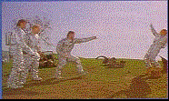 |
|
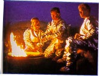 |
That night, the
four of them set-up camp, waiting for the authorities to find them and
hoping to get help on their mysterious new powers. Dr Doom pin-points
their location first and sends out a group of his agents disguised as
the U.S. military. Everyone is surprised when Ben Grimm appears in a
rocky orange hide. |
|
All of them are
taken and put in quarantine in an unknown location place which is
actually Doom's castle. There, Dr Doom's scientist performs
experiments on the four to ascertain where they got their powers from.
Dr Doom plots to transfer all their powers to himself. |
 |
|
 |
Meanwhile, Reed
begins to grow suspicious on why they have been kept so isolated and
decides that they should help themselves. Disguising themselves in
radiation suits, the four of them escape but not before stumbling upon
a laboratory. Here they come face-to-face with their captor - Dr Doom. |
|
In an attempt to
escape, Dr Doom sends in his agents to capture the Fantastic Four. The
four of them are still relatively new at using their powers and hold
their own against Doom's men. |
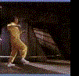 |
|
 |
As the fight
ensues, they find themselves cornered. Johnny Storm attempts to burn
their way out while the others cover him but it seems that the walls
are too strong.
|
|
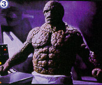 |
Enter the Thing.
Realizing it is their only hope for escape, the Thing breaks them out
by smashing a hole through the wall. Defeating most of Doom's men,
they all manage to escape. |
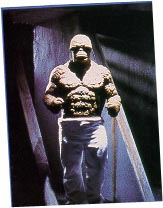 |
|
 |
Dr Doom returns
to his lab, having left the fighting to his men and is amazed to find
that the Fantastic Four have escaped. Dr Doom puts a plan into motion
but to ensure it will work, he requires the diamond the Jeweller
stole. Meanwhile, our heroes have returned to New York where Reed
begins to look for a cure. he realizes that the powers they were given
were as an indirect result of their main weaknesses but still cannot
determine why they can all revert back to human form while Ben remains
as the Thing. |
|
Angry
with they
way he looks and the fact that Reed is having trouble finding a cure,
the Thing deserts the team, leaving the Baxter building. On the
streets, the Thing is shunned by the public until he is found by the
Jeweller's men. They are not afraid of him and finding that he has
been accepted, the Thing goes with them. |
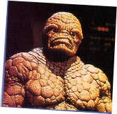 |
|
 |
The Thing is
taken to the Jeweller's underground hideout. There, the Jeweller
accepts him into his group, realizing the potential of having the
Thing on his side. |
|
It is at that
moment that Dr Doom arrives with a number of his own men who are
armed. Dr Doom demands that the jeweller hand over the stolen diamond
to him. |
 |
|
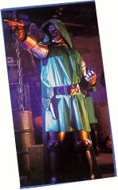 |
The Jeweller
refuses and a fight ensues which is mostly one-sided with most of the
Jeweller's men being killed by the dozen. The Jeweller takes Alicia
Masters hostage and uses her as a shield. Dr Doom isn't interested in
her until the Thing intervenes. |
|
Realizing that
the Thing has feelings for the girl, Dr Doom takes her hostage and
threatens to kill her. This also allows him to get his hands on the
diamond. The Thing, seeing Alicia in Dr Doom's clutches, get's ready
to attack. |
 |
|
 |
Alicia tells the
Thing, realizing he is actually Ben Grimm and that he is still alive,
that she loves him. This causes a transformation in the Thing,
reverting him back to Ben Grimm. Now in danger of being killed, Ben
escapes. Upon reaching the surface, Ben Grimm changes back to the
Thing but Dr Doom has escaped by this time. |
|
Back at the
Baxter building, Reed has had little luck in finding a cure but they
are all now beginning to accept their powers. Susan Storm even sews up
four costumes for them to all wear, deciding to use their powers to
help mankind. |
 |
|
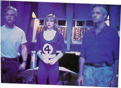 |
Suddenly, the
main display screen comes to life and the visage of Doom appears. Dr
Doom gives the Fantastic Four twelve hours to surrender themselves to
him. He warns them that if they refuse, he will demolish all of New
York with his giant laser gun (!). |
|
Reed now knows
that Dr Doom is really his friend, Victor von Doom whom he thought had
died ten years ago. But they are now only three when the Thing
returns, telling them that he is back for good. Reed wants to go alone
but they all have a stake in this. Climbing into the Fantasticar, the
four of them set off for Latveria. |
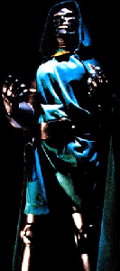 |
|
 |
Upon arrival,
they find that the castle is deserted. they begin there search which
takes them to Dr Doom's lab. |
|
Reed is amazed at
the technology and upon seeing the giant laser, decides to first
dismantle it. the four of them rush over to it but Doom makes his
entrance. |
 |
|
 |
Reed tells Doom
he knows who he is and tries to persuade him to give up his mad plan
to destroy New York City. Doom, naturally, refuses. |
|
It is then that
Doom pulls a switch and four forcefields drop down from the ceiling,
trapping our heroes. There is an energy field which then begins to
siphon off their powers. Doom's plan is to feed their powers through
the giant diamond and channel it all into himself. |
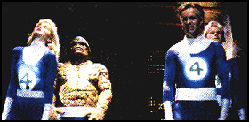
|
|
 |
While Doom is
distracted in doing this, Reed stretches his foot as far as it will go
and manages to de-activate the force field. free once more, Dr Doom
runs, sending in his men to take care of the Fantastic Four but not
before also activating the laser. A fight with Doom's men ends quickly
and reed races to try and de-activate the laser but it is too late. |
|
Meanwhile, the
Thing searches and finds Alicia Masters and frees her from Doom's men. |
 |
|
 |
Johnny flames on
and flies out after the laser beam, hoping to intercept it before it
hits New York. As the Human Torch he manages to outrun the beam just
before it's about to burn the city to the ground but how can he stop
it? |
|
|
Reed and Sue
watch Johnny's progress, hoping he will stop the laser beam in time.
But now, there remains only one more loose end. The final
confrontation with Doom. Reed runs out of the lab to find him. |
|
Using his flame
power, the Human Torch creates a shield of fire and blocks the laser
beam just outside New York. Increasing the pressure, the Human Torch
manages to knock the beam of course and extinguish it just in time. |
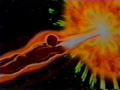 |
|
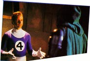 |
Reed finds Doom
and the final fight begins. Reed rains blow after blow on Dr Doom,
using his stretching ability to keep out of Doom's reach and manages
to knock him over the edge of the balcony. Not wanting to kill him,
Reed catches him by the gauntlet and tries to pull him up. Doom has
other ideas and knowing he has lost, dislodges his gauntlet and falls
- seemingly to his death. |
|
Sue finds Reed
and all of them leave Doom's castle. Reed pops the question to Sue and
they are married soon afterwards in a ceremony attended by all.
|
|
 |
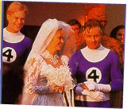 |
|
|